Labor, 2026. szeptember 26.
Posztok, sztorik és hirdetések Pop módra
Instagramra és Facebookra, a saját rajzainkból, 3D-s tárgyainkból, alkalmazásképeinkből és a bemutatkozó videó kockáiból. Minden szó a weboldalról jön, vagy a COPY.md-ben áll a forrásával együtt. Innen semmi nem megy ki sehova: ezek fájlok, a fiókokat és a hirdetéseket a marketinges csapat viszi.
- 57 kép PNG-ben
- magyarul és angolul
- ár és ügyfélszám nélkül
Formátumok és sávok
Minden kép pontos pixelméretben készül. A szaggatott keret a szöveg helye: azon kívül csak szín, rajz és 3D lehet, szöveg nem. A sávok csak itt, a laborban látszanak, a letölthető képeken nincsenek rajta.
-
Poszt, négyzet1080 × 1080. Instagram és Facebook hírfolyam. -
Poszt, álló1080 × 1350. Instagram és Facebook hírfolyam. -
Sztori és reel-borító1080 × 1920. Instagram és Facebook sztori, reel-borító. -
Körhinta, öt kártya1080 × 1350. Instagram és Facebook körhinta. -
Hirdetés 1:11080 × 1080. Meta hirdetés, hírfolyam. -
Hirdetés 4:51080 × 1350. Meta hirdetés, hírfolyam. -
Hirdetés 9:161080 × 1920. Meta hirdetés, sztori és reels. -
Facebook-borítókép1640 × 624. Facebook-oldal, borítókép. -
Profilkép1080 × 1080. Instagram és Facebook, kör alakban.
- A szöveg helye. Sztorin és 9:16-os hirdetésen felül 250, alul 340 pixel marad szabadon, mert ott az Instagram és a Facebook saját gombjai és felirata ül.
- Négyzetes posztnál a profil rácsa 3:4 arányban vágja a képet, két oldalt 135 pixelt levág. A címsor és a matrica ezen belül marad, a képaláírás mehet szélesebben.
- Facebook-borítónál telefonon csak a középső 1110 pixel látszik a 1640-ből. A szöveg itt marad, oldalt csak tárgyak vannak.
Posztok és sztorik
Hét poszt és hat sztori, mindegyik magyarul és angolul. Egy kattintás a képre: teljes méret. Az angol változatok az angol videókockákat mutatják, az alkalmazásképek magyarok, és ezt a képaláírás ki is mondja.
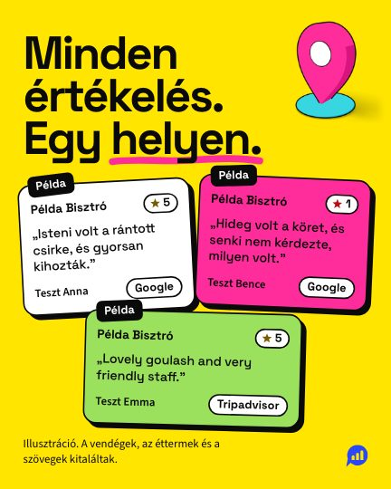
Poszt, álló HUPNG letöltéseBistroTech-hu-post-4x5-01-reviews.png 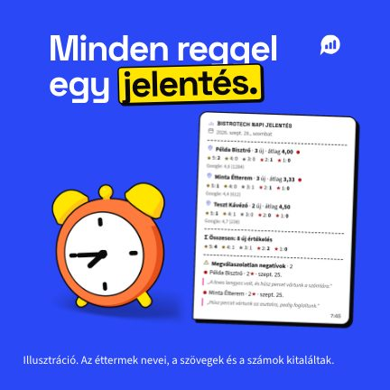
Poszt, négyzet HUPNG letöltéseBistroTech-hu-post-1x1-02-report.png Poszt, álló HUPNG letöltéseBistroTech-hu-post-4x5-03-approve.png 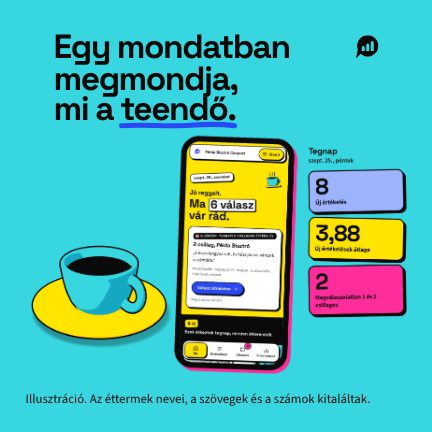
Poszt, négyzet HUPNG letöltéseBistroTech-hu-post-1x1-04-today.png 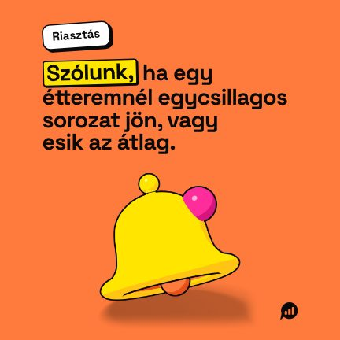
Poszt, négyzet HUPNG letöltéseBistroTech-hu-post-1x1-05-alert.png 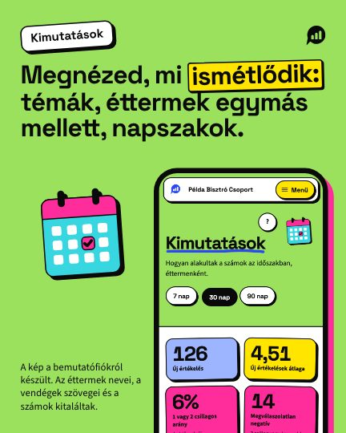
Poszt, álló HUPNG letöltéseBistroTech-hu-post-4x5-06-analysis.png 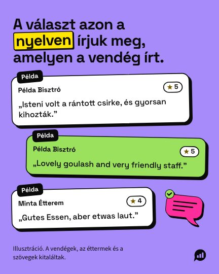
Poszt, álló HUPNG letöltéseBistroTech-hu-post-4x5-07-language.png Sztori és reel-borító HUPNG letöltéseBistroTech-hu-story-9x16-08-reviews.png 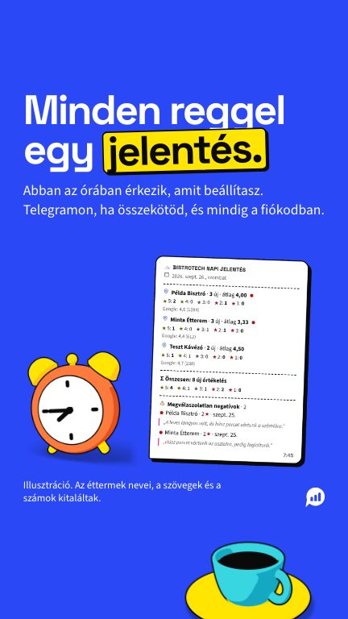
Sztori és reel-borító HUPNG letöltéseBistroTech-hu-story-9x16-09-report.png 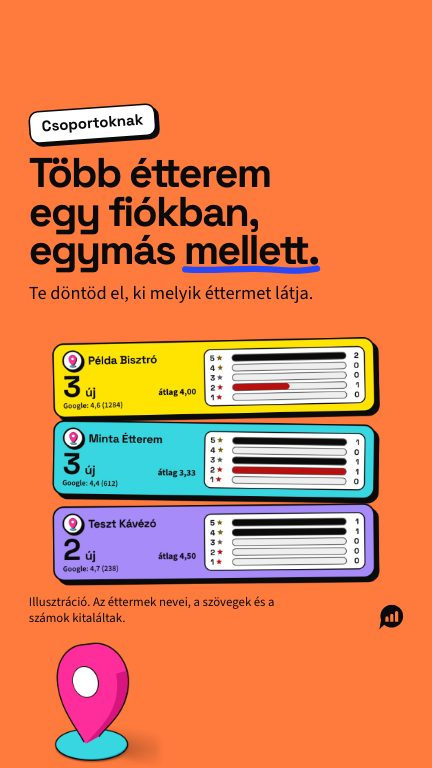
Sztori és reel-borító HUPNG letöltéseBistroTech-hu-story-9x16-10-groups.png 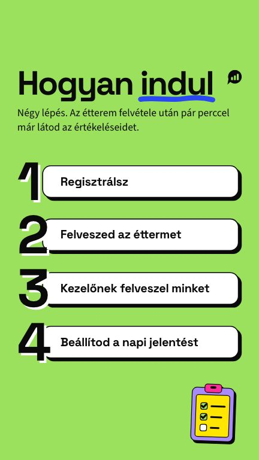
Sztori és reel-borító HUPNG letöltéseBistroTech-hu-story-9x16-11-start.png 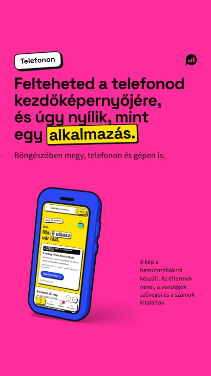
Sztori és reel-borító HUPNG letöltéseBistroTech-hu-story-9x16-12-phone.png 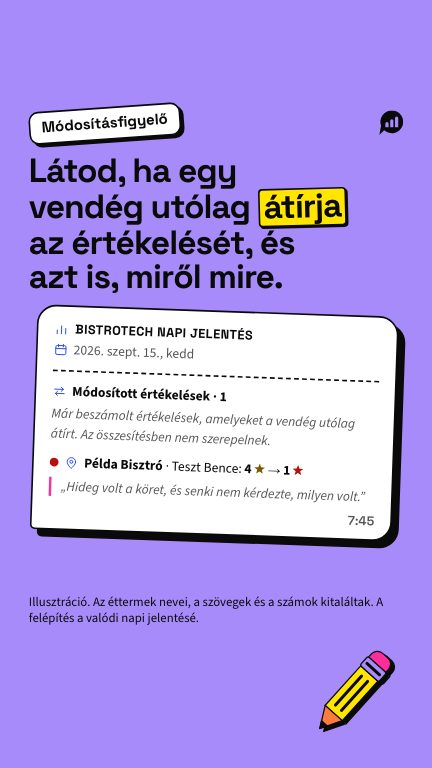
Sztori és reel-borító HUPNG letöltéseBistroTech-hu-story-9x16-13-edits.png
{kind=link}
{kind=link}
{kind=link}
{kind=link}
{kind=link}
{kind=link}
{kind=link}
{kind=link}
{kind=link}
{kind=link}
{kind=link}
{kind=link}
{kind=link}
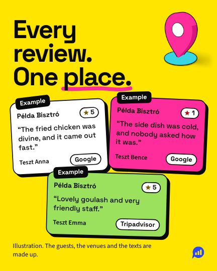
Poszt, álló ENPNG letöltéseBistroTech-en-post-4x5-01-reviews.png 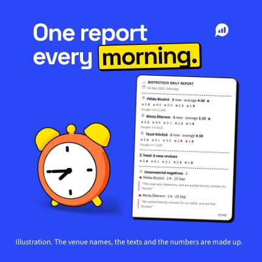
Poszt, négyzet ENPNG letöltéseBistroTech-en-post-1x1-02-report.png 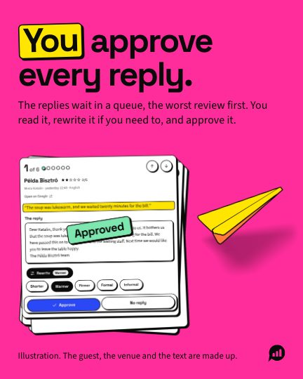
Poszt, álló ENPNG letöltéseBistroTech-en-post-4x5-03-approve.png Poszt, négyzet ENPNG letöltéseBistroTech-en-post-1x1-04-today.png 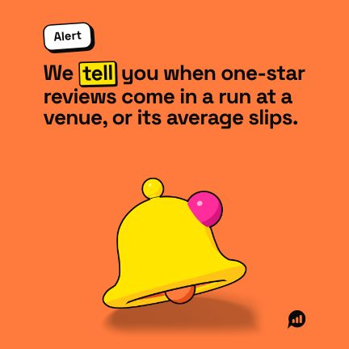
Poszt, négyzet ENPNG letöltéseBistroTech-en-post-1x1-05-alert.png 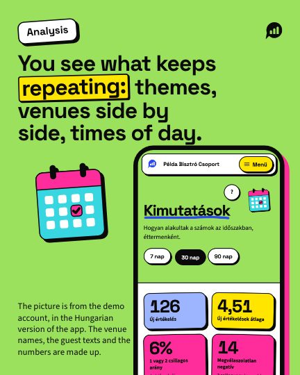
Poszt, álló ENPNG letöltéseBistroTech-en-post-4x5-06-analysis.png 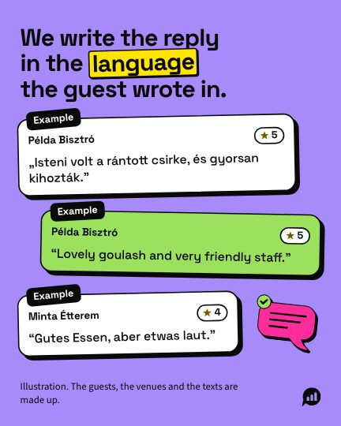
Poszt, álló ENPNG letöltéseBistroTech-en-post-4x5-07-language.png 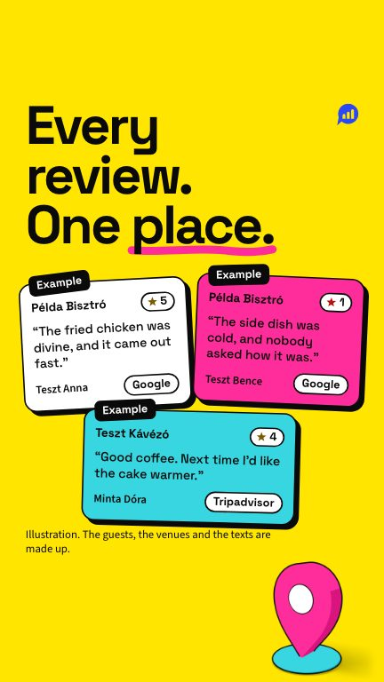
Sztori és reel-borító ENPNG letöltéseBistroTech-en-story-9x16-08-reviews.png 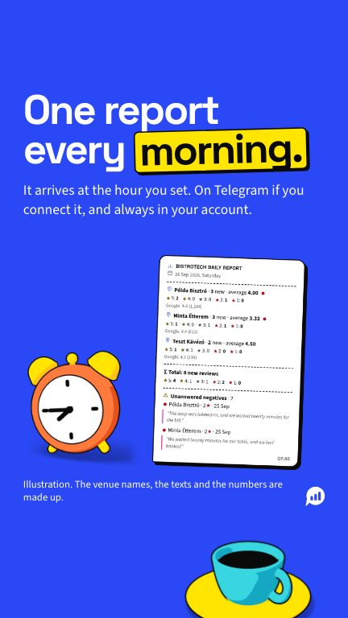
Sztori és reel-borító ENPNG letöltéseBistroTech-en-story-9x16-09-report.png 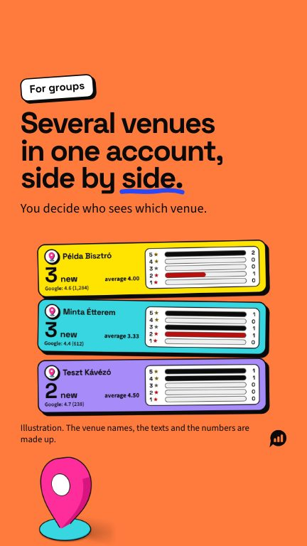
Sztori és reel-borító ENPNG letöltéseBistroTech-en-story-9x16-10-groups.png 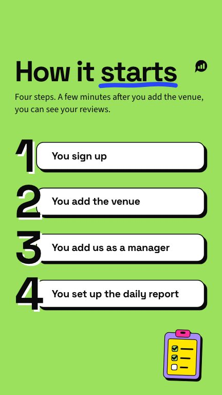
Sztori és reel-borító ENPNG letöltéseBistroTech-en-story-9x16-11-start.png 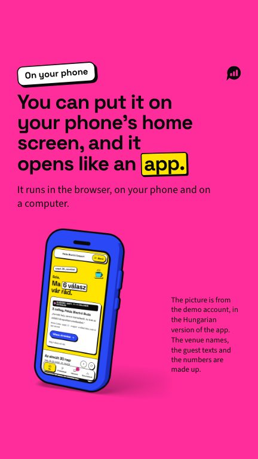
Sztori és reel-borító ENPNG letöltéseBistroTech-en-story-9x16-12-phone.png 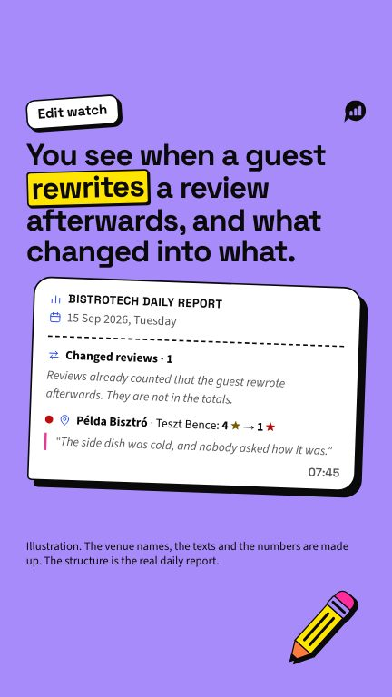
Sztori és reel-borító ENPNG letöltéseBistroTech-en-story-9x16-13-edits.png
{kind=link}
{kind=link}
{kind=link}
{kind=link}
{kind=link}
{kind=link}
{kind=link}
{kind=link}
{kind=link}
{kind=link}
{kind=link}
{kind=link}
{kind=link}
Egy reggel, öt kártyán
A körhinta végigmegy a reggelen: jönnek az értékelések, megjön a jelentés, jóváhagysz egy választ, nincs több teendő, és a csoportoknak egy fiók. Sorrendben kell feltölteni, az első kártyától.
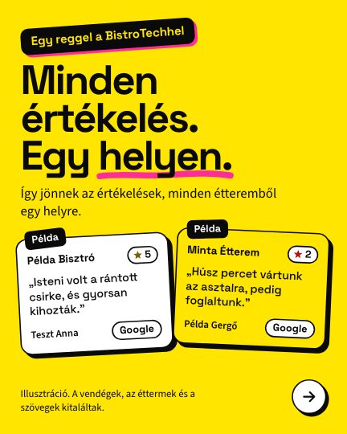
Körhinta, öt kártya HUPNG letöltéseBistroTech-hu-carousel-4x5-1of5-reviews.png 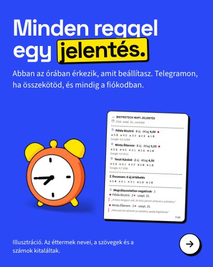
Körhinta, öt kártya HUPNG letöltéseBistroTech-hu-carousel-4x5-2of5-report.png 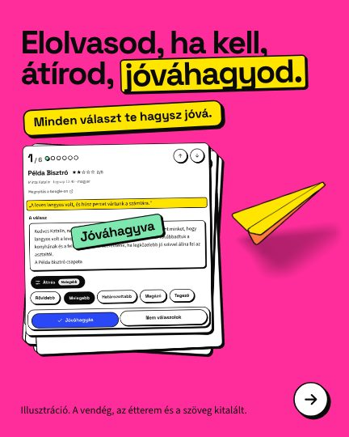
Körhinta, öt kártya HUPNG letöltéseBistroTech-hu-carousel-4x5-3of5-approve.png 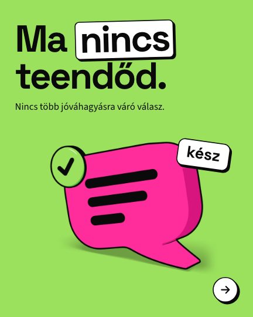
Körhinta, öt kártya HUPNG letöltéseBistroTech-hu-carousel-4x5-4of5-done.png 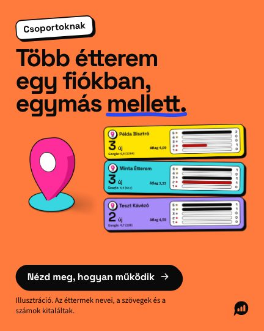
Körhinta, öt kártya HUPNG letöltéseBistroTech-hu-carousel-4x5-5of5-groups.png
{kind=link}
{kind=link}
{kind=link}
{kind=link}
{kind=link}
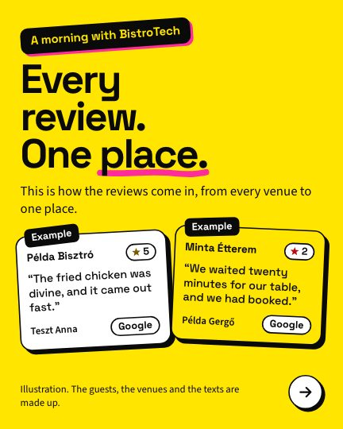
Körhinta, öt kártya ENPNG letöltéseBistroTech-en-carousel-4x5-1of5-reviews.png 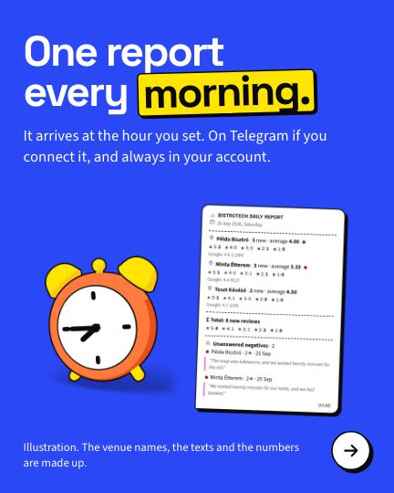
Körhinta, öt kártya ENPNG letöltéseBistroTech-en-carousel-4x5-2of5-report.png 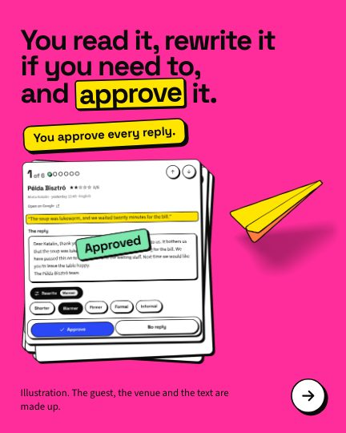
Körhinta, öt kártya ENPNG letöltéseBistroTech-en-carousel-4x5-3of5-approve.png 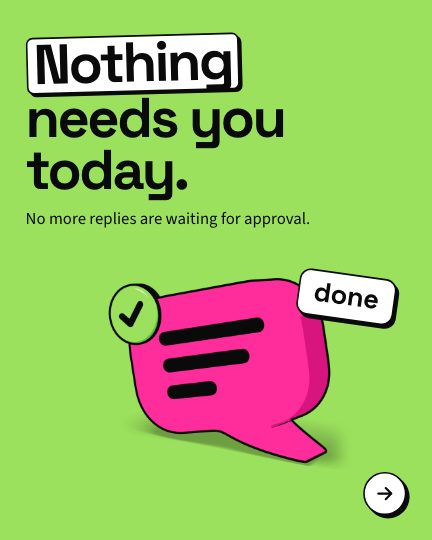
Körhinta, öt kártya ENPNG letöltéseBistroTech-en-carousel-4x5-4of5-done.png 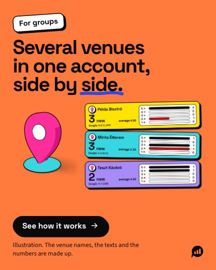
Körhinta, öt kártya ENPNG letöltéseBistroTech-en-carousel-4x5-5of5-groups.png
{kind=link}
{kind=link}
{kind=link}
{kind=link}
{kind=link}
Három hirdetés, három méretben
Minden hirdetésen a logó, egy mondat a weboldalról, egy kép a termékből és a „Nézd meg, hogyan működik” gomb. Ár, próbaidő és ügyfélszám nincs rajtuk. Méretenként 1:1 és 4:5 a hírfolyamba, 9:16 a sztoriba és a reelsbe.
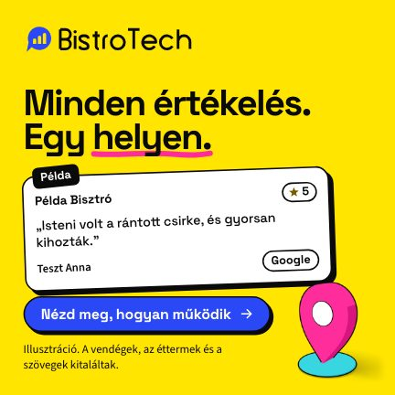
Hirdetés 1:1 HUPNG letöltéseBistroTech-hu-ad-1x1-a1-reviews.png 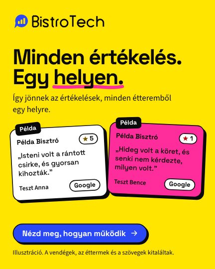
Hirdetés 4:5 HUPNG letöltéseBistroTech-hu-ad-4x5-a1-reviews.png 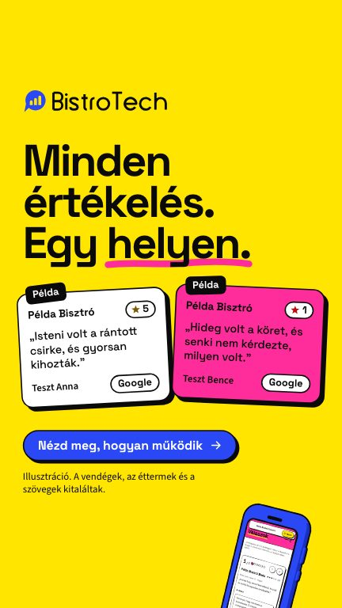
Hirdetés 9:16 HUPNG letöltéseBistroTech-hu-ad-9x16-a1-reviews.png 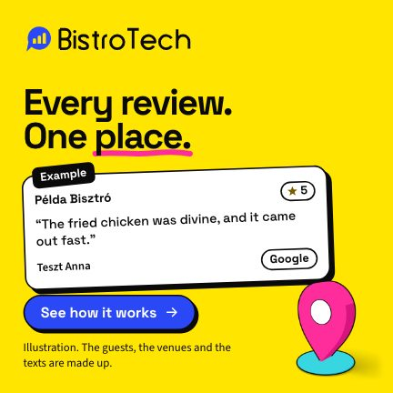
Hirdetés 1:1 ENPNG letöltéseBistroTech-en-ad-1x1-a1-reviews.png 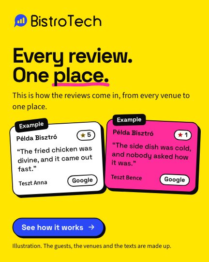
Hirdetés 4:5 ENPNG letöltéseBistroTech-en-ad-4x5-a1-reviews.png 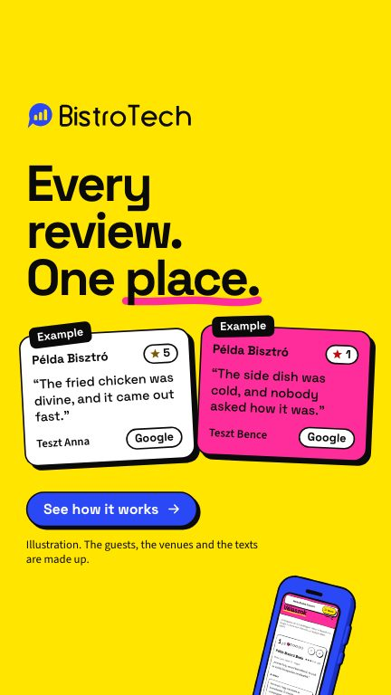
Hirdetés 9:16 ENPNG letöltéseBistroTech-en-ad-9x16-a1-reviews.png
{kind=link}
{kind=link}
{kind=link}
{kind=link}
{kind=link}
{kind=link}
Hirdetés 1:1 HUPNG letöltéseBistroTech-hu-ad-1x1-a2-report.png 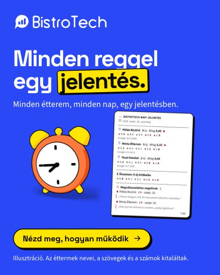
Hirdetés 4:5 HUPNG letöltéseBistroTech-hu-ad-4x5-a2-report.png 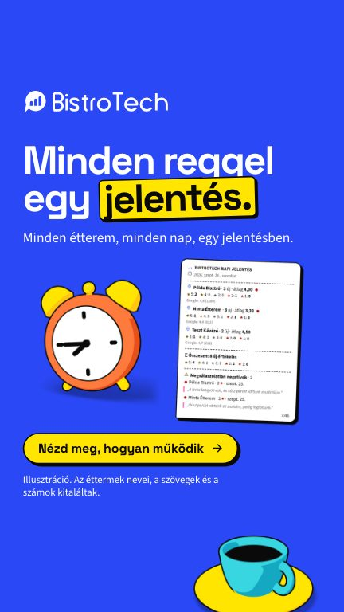
Hirdetés 9:16 HUPNG letöltéseBistroTech-hu-ad-9x16-a2-report.png 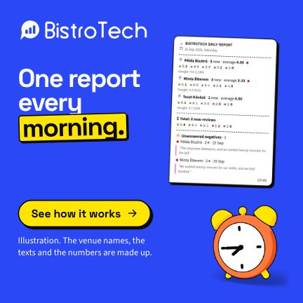
Hirdetés 1:1 ENPNG letöltéseBistroTech-en-ad-1x1-a2-report.png 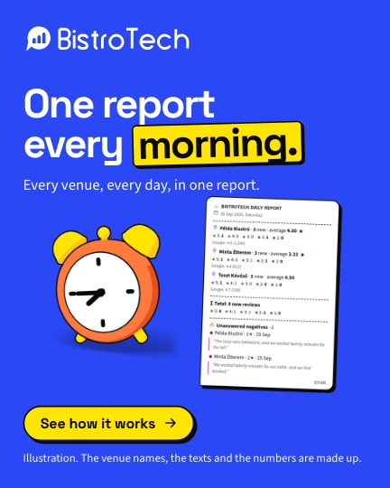
Hirdetés 4:5 ENPNG letöltéseBistroTech-en-ad-4x5-a2-report.png 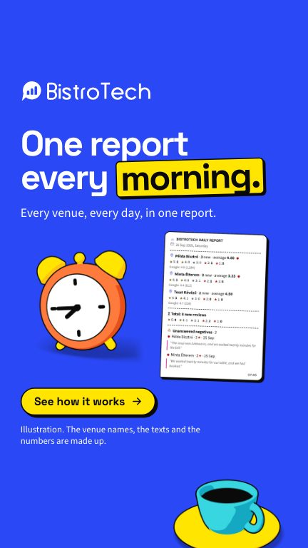
Hirdetés 9:16 ENPNG letöltéseBistroTech-en-ad-9x16-a2-report.png
{kind=link}
{kind=link}
{kind=link}
{kind=link}
{kind=link}
{kind=link}
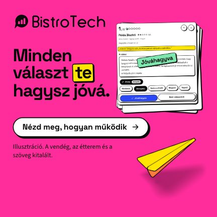
Hirdetés 1:1 HUPNG letöltéseBistroTech-hu-ad-1x1-a3-approve.png 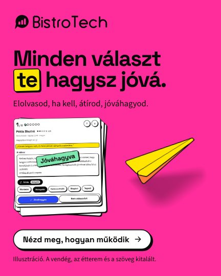
Hirdetés 4:5 HUPNG letöltéseBistroTech-hu-ad-4x5-a3-approve.png 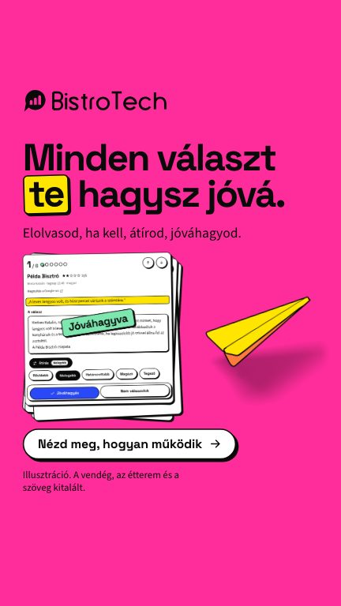
Hirdetés 9:16 HUPNG letöltéseBistroTech-hu-ad-9x16-a3-approve.png 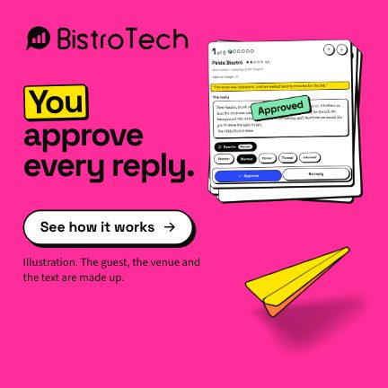
Hirdetés 1:1 ENPNG letöltéseBistroTech-en-ad-1x1-a3-approve.png Hirdetés 4:5 ENPNG letöltéseBistroTech-en-ad-4x5-a3-approve.png Hirdetés 9:16 ENPNG letöltéseBistroTech-en-ad-9x16-a3-approve.png
{kind=link}
{kind=link}
{kind=link}
{kind=link}
{kind=link}
{kind=link}
Profilkép és borító
A profilkép a lapos jel a sárga blokkon, más semmi. A jel nem kap körvonalat, árnyékot vagy dőlést: csak a helye, a mérete és a színe változhat. Így 40 pixeles körben is olvasható.
{kind=link}
{kind=link}
{kind=link}
Szabályok és új poszt
Amit minden kép betart
- Szöveg csak a COPY.md-ből. Ha valami új kell, előbb oda írod be, a forrásával. A build megáll, ha egy szó nincs benne.
- Ár, próbaidő, ügyfélszám, eredmény és megnevezett referencia nincs. A mintaadatok kitaláltak, és a képaláírás ki is mondja.
- A Google és a Tripadvisor csak szóként szerepel, logó nélkül. Gépre utaló eladási szó sehol (D-032).
- A BistroTech-jel lapos, egyszínű: nincs körvonala, árnyéka, dőlése, 3D-je.
- Szöveg csak a sávon belül, legalább 32 pixel magas betűvel, legalább 4,5:1 kontraszttal a saját alapján. Mögötte és fölötte semmi.
Így készül új poszt
- A kit.json-ban lemásolsz egy hasonló darabot, és új azonosítót adsz neki.
- Átírod a szövegeket (csak COPY.md-soron) és a képeket.
- Lefuttatod:
node tools/build.mjs --only post-4x5-08-uj
A kép a png/ mappában lesz, az ellenőrzések eredménye a képernyőn. A teljes futás a labort és a kontaktlapot is újraírja. A részletek a README.md-ben.
- README.md
- COPY.md
- kit.json
- checks.json
- Kontaktlap
{kind=link}